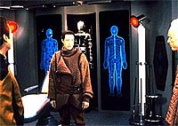
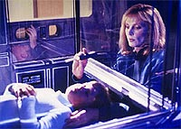
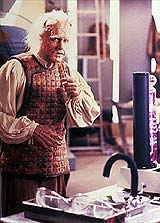
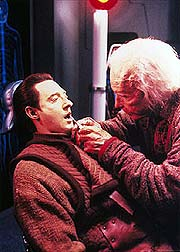

|
MANCHETE
DO EPISDIO
Continuao
de clich do irmo malvado
estabelece 'arco' para o andride Data
Episdio
anterior | Prximo
episdio
Sinopse:
Data Estelar: 44085.7.
Uma brincadeira de mau gosto de um garoto deixa seu irmo
seriamente ferido. Enquanto a Enterprise segue para a base estelar
mais prxima para tentar salv-lo, Data inexplicavemente apresenta
um mau funcionamento, que o faz se isolar na ponte de comando e
mudar a rota da nave, levando-a a um planeta.
 Chegando
ao seu destino, descoberto que Data estava agindo seguindo um
sinal enviado por seu recluso criador, Dr. Noonien Soong. O
ciberneticista explica que trouxe Data para seu lar para dar-lhe um
chip de emoes. Porm o andride e o Dr. Soong so
surpreendidos pela chegada de Lore, o irmo "malvado" de
Data, que estava vagando pelo espao h anos e foi atrado ao
planeta pelo mesmo sinal que trouxe Data.
Lore consegue enganar Soong e fazer com que o cientista instale nele
o chip de emoes. Logo aps ganhar o chip, Lore ataca Soong e
foge.
A Enterprise consegue enviar um grupo avanado ao planeta para
resgatar Data, mas tarde demais para pegar Lore ou salvar o dr.
Soong.
Comentrios:
 "Brothers"
traz de volta um dos clichs mais conhecidos da histria da
dramaturgia: o irmo bonzinho encontra seu gmeo, mau e
inescrupuloso. Mas no isso que faz do episdio ruim. Muito
pelo contrrio, h grandes qualidades neste episdio que
transforma "Datalore", do
primeiro ano da srie, no primeiro captulo de um arco muito maior
envolvendo Data e seu irmo.
Brent Spiner sobra nesse episdio, tanto pela qualidade de suas
interpretaes quanto pelo nmero de personagens interpretados,
no caso trs, bastante diferentes entre si. uma boa chance para
que o ator mostre sua capacidade e ele no decepciona.
 Lore
continua to carismtico quanto sempre, e ganha a simpatia da audincia,
sendo exposto como o irmo mais velho esquecido e negligenciado com
srios problemas psicolgicos. Quebra-se, portanto, aquela aura de
pura maldade que havia sido deixada sobre o personagem. No que ele
se mostre bom, longe disso. Mas agora possvel entender um pouco
da psique do personagem e as razes de seu comportamento violento.
E Spiner tambm consegue interpretar um convincente dr. Noonien
Soong, o ciberneticista criador dos dois andrides. Sua apario
muito importante para criar entre os trs o elo familiar. E
percebe-se claramente o carinho do criador para com seus andrides,
inclusive por Lore.
Aprendemos neste episdio que Data no uma verso
"imperfeita" de Lore, mas justamente o contrrio. Lore
havia sido desmontado por apresentar emoes altamente instveis.
E as coisas esto prestes a ficar piores, aps o andride roubar
o chip de emoes criado para Data.
Pela forma que o episdio conduzido, fica muito claro que voltaramos
a ver Lore e o chip de emoes. Para ficar mais evidente, s
colocando um "To be continued..." no final. Lore voltar
em "Descent", o episdio duplo que fechou o sexto
ano da srie e deu incio ltima temporada. J a questo do
chip ser resolvida no filme "Generations".
 O
episdio, o melhor j produzido retratando a relao entre Data
e Lore, foi escrito por ningum menos que Rick Berman, o escolhido
de Gene Roddenberry para ser seu sucessor no comando de Jornada nas
Estrelas. Embora no costume escrever episdios, em "Brothers"
Berman prova que no por falta de capacidade.
Um roteiro bem amarrado, uma histria consistente com o que havia
sido visto antes na srie e um bom retrato da famlia
Lore-Data-Soong fazem desse episdio um sucesso. E para Data
especialmente, o episdio faz o papel exercido por "Sins of
the Father" para Worf: estabelece um arco para o
personagem, que voltaria a ser abordado de tempos em tempos.
Citaes:
Data - "One
Seven Three Four Six Seven Three Two One Four Seven Six Charlie
Three Two Seven Eight Nine Seven Seven Seven Six Four Three Tango
Seven Three Two Victor Seven Three One One Seven Eight Eight Eight
Seven Three Two Four Seven Six Seven Eight Nine Seven Six Four Three
Seven Six LOCK."
("Um Sete Trs Quatro Seis Sete Trs Dois Um Quatro Sete Seis
Charlie Trs Dois Sete Oito Nove Sete Sete Sete Seis Quatro Trs
Tango Sete Trs Dois Victor Sete Trs Um Um Sete Oito Oito Oito
Sete Trs Dois Quatro Sete Seis Sete Oito Nove Sete Seis Quatro Trs
Sete Seis TRAVAR.")
Data - "You know that I cannot grieve for you, sir."
("Voc sabe que eu no posso lamentar por voc,
senhor.")
Soong - "You will... in your own way."
("Voc ir... a seu prprio modo.")
Beverly - "They're brothers, Data. Brothers forgive."
("Eles so irmos, Data. Irmos perdoam.")
Trivia:
 Neste episdio, Brent Spiner interpreta trs personagens, Data,
Lore e o Dr. Soong. No foi a primeira vez que fez uma atuao mltipla
em um episdio da Nova Gerao. Em "Datalore",
ele interpretou Data e Lore, assim como em "Descent".
Mas foi em "A Fistful of Datas",
do 6 ano, que Brent atingiu o pice da multiplicidade.
Interpretou nada menos que sete personagens!
Neste episdio, Brent Spiner interpreta trs personagens, Data,
Lore e o Dr. Soong. No foi a primeira vez que fez uma atuao mltipla
em um episdio da Nova Gerao. Em "Datalore",
ele interpretou Data e Lore, assim como em "Descent".
Mas foi em "A Fistful of Datas",
do 6 ano, que Brent atingiu o pice da multiplicidade.
Interpretou nada menos que sete personagens!
Quando
Lore diz que estava com os Pakleds, ele no est mentindo! Nesse
episdio ele estava usando uma genuna vestimenta dos Pakleds,
como visto no episdio "Samaritan Snare", do
segundo ano.
Nesse
episdio, Data assobia a mesma msica que estava tentando assobiar
no episdio-piloto "Encounter at
Fairpoint": "Pop Goes the Weasel".
Dr.
Soong cita a "entidade cristalina". Essa forma de vida foi
vista em "Datalore", do 1
ano, e em "Silicon Avatar",
episdio do 5 ano.
O
veterano ator Keye Luke, que participou do episdio da Srie Clssica
"Whom Gods Destroy", foi considerado para fazer o
papel do Dr. Soong. Porm Brent Spiner acabou assumindo (mais) esse
papel.
Ficha
tcnica:
Escrito por Rick Berman
Direo de Robert Bowman
Exibido em 8/10/1990
Produo: 077
Elenco:
Patrick Stewart como
Jean-Luc Picard
Jonathan Frakes como William Thomas Riker
Brent Spiner como Data
LeVar Burton como Geordi La Forge
Michael Dorn como Worf
Gates McFadden como Beverly Crusher
Marina Sirtis como Deanna Troi
Wil Wheaton como Wesley Crusher
Elenco convidado:
Brent Spiner como
Dr. Noonien Soong e Lore
Colm Meaney como Miles Edward O'Brien
Cory Danziger como Jake Potts
Adam Ryen como Willie Potts
James Lashly como alferes Kopf
Episdio
anterior | Prximo
episdio
|